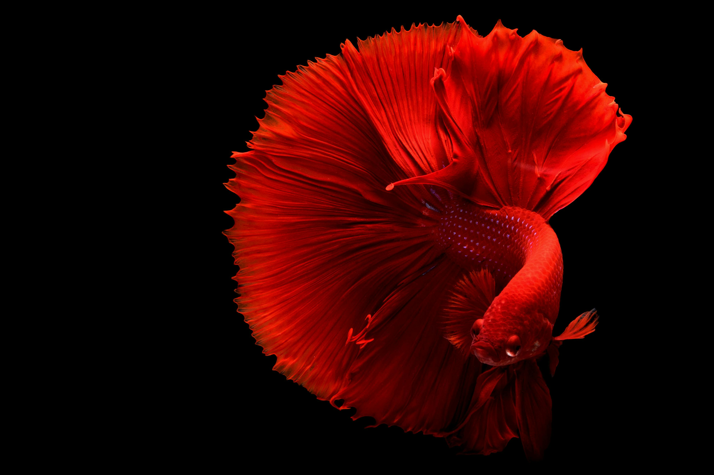
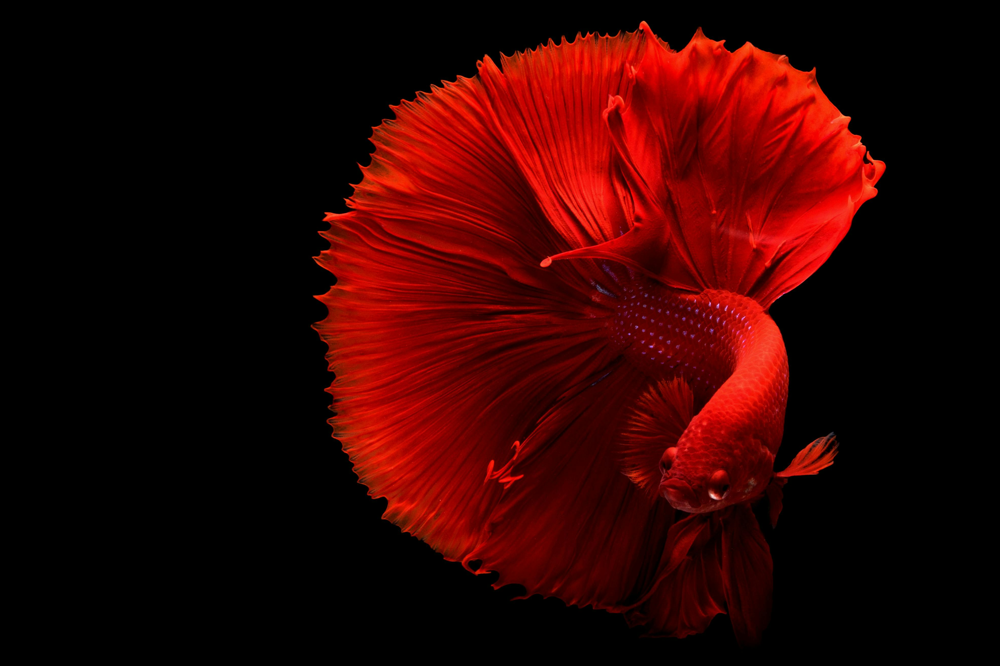

Summer Vacation
Best summer vacation in the USA
Best summer vacation in the USA
Playful and curious

The cat is a domestic species of small carnivorous mammal.
Colorful

A fish is an aquatic, anamniotic, gill-bearing vertebrate animal with swimming fins and a hard skull, but lacking limbs with digits.
Friendly and loyal

Dogs have been bred for desired behaviors, sensory capabilities, and physical attributes. Dog breeds vary widely in shape, size, and color.


 
